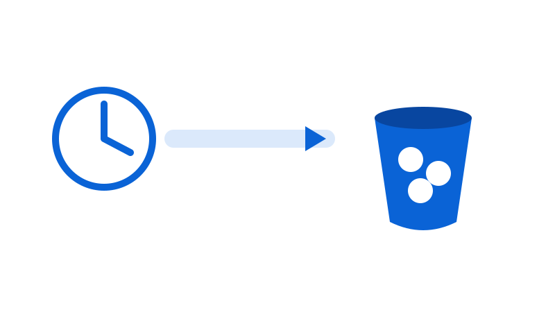
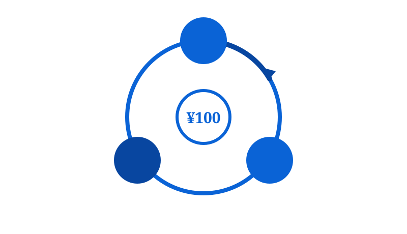
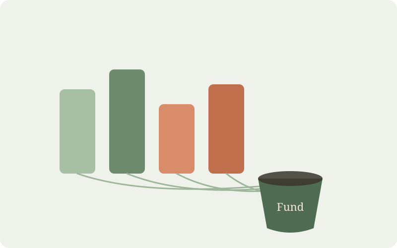
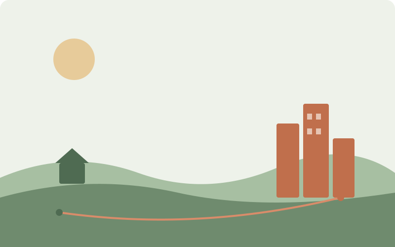
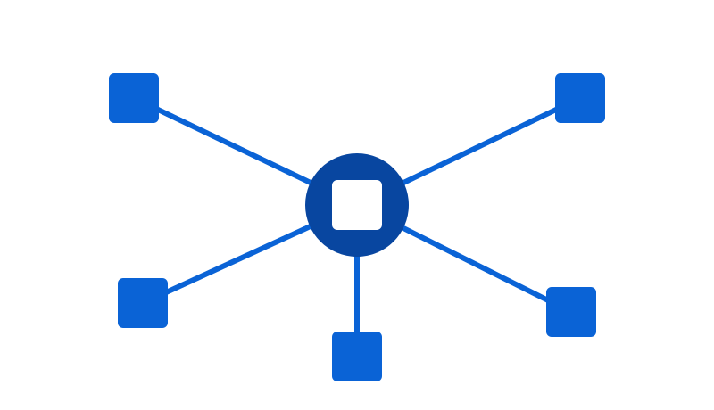

連携が生む経済効果、現場に直接は入れない投資の構造、そして「地域産業資本」という発想。ここに並ぶ金額はすべて仮説モデルであり、確定を約束するものではありません。読むべきは大きさより、向きです。

医療と介護の連絡・同意・書類・収納を仕組みが引き受ける。人が机で消していた時間が、そのまま原資に変わる。暮らしの支えが人をつなぎ、地域に循環をつくる。

ドラッグストアやスーパーが連携に加われば、月額の会員制サービスが回りはじめる。月100円の会員が地域支援と送客の原資になり、小売は来店客を得る。福祉の主体が関わるからこそ、100円でも「安心して払える」。
福祉の現場は剰余金を配当できない。だから資金は現場の外——不動産・物流・DX・ファンドという器に入り、そこで利回りを生む。原則を先に置く。
| 器 | 何に | いくら（目安） | 想定利回り（仮説） |
|---|---|---|---|
| Ⅰ 不動産SPC | 施設の取得・改修、土地建物の保有・賃貸 | 1案件 ¥1〜5億 | 年5〜8%（賃料NOI） |
| Ⅱ 実装会社（DX） | 連絡・請求・収納・共同購入の全国展開 | ラウンド ¥数千万〜数億 | 株式価値の成長／EXIT |
| Ⅲ 物流 | 共同購入・共同配送の背骨 | ¥数千万〜（拠点数による） | 年8〜12%（手数料） |
| Ⅳ 地域インフラファンド | Ⅰ〜Ⅲを束ねて分配 | 組成 ¥10億／将来 ¥100億（構想） | 加重平均 年8〜10%（目標） |
バラバラなら小さい各収益をファンドで束ねることで、変動をならし、投資家に説明できる利回りにする。現場の非分配とは切り離した、営利の器の中での設計。
年間赤字の法人が、内部留保を寝かせている——投資リターンより、本業（稼働率改善）のリターンの方が桁違いに高いからです。だから内部留保を金融投資には回さない。信用補完（レバレッジ）として効かせる。
複数法人の内部留保を束ねれば、銀行の与信が跳ね上がる。現場の資金は公益目的のまま動かさず、それを担保に、SPC・物流・DXへ融資を呼び込む——三者にメリットが生まれる。

へき地は、想像よりずっと厳しい。人がいない、周りに何もない。何か一つ作っても、それだけでは変わらない。だから発想を変える——地域で一番稼げる産業を育て、その利益で医療・介護・福祉を支える。

若者が高校を出て都市へ行き、帰ってこない。だから担い手も利用者も減り、施設が傾く。介護施設の不振は、地域経済衰退の結果です。介護に投資しても、地域が痩せていれば再生しない。
順序を逆にする。地域経済を再生することで、介護を持続可能にする。
| 着眼 | やること | 福祉への還り方 |
|---|---|---|
| 地域No.1産業（農・酪農・水産・果樹・観光 等） | 後継者不在の中核事業をファンドで承継し、販路を全国・海外へ | 売上・雇用増 → 担い手が地域に戻る |
| 地域物流会社 | 承継して共同購入・農産・EC・介護物流を一本化 | 通年の仕事 → 安定雇用 |
| 季節で仕事が切れる業種（除雪・土木 等） | 閑散期を送迎・配送・買い物支援に組み替え | 通年雇用 → 定着率改善 |
| 業種の壁を越える（例：薬局が菓子のFCを併設） | 地域の環境と客足を活かした複合化 | 来店・収益増 → 拠点が生き残る |

地域再生会社が農業・林業・物流・観光・加工・エネルギーを担い、そこへファンド・銀行・自治体・企業が入る。福祉の現場は、その会社から仕事を受ける側に回る——就労、食材、配送。介護を「支えるために介護へ投資する」のではなく、地域を再生して介護を持続させる。
地域が稼ぐ力を取り戻せば、
医療も介護も、続いていく。